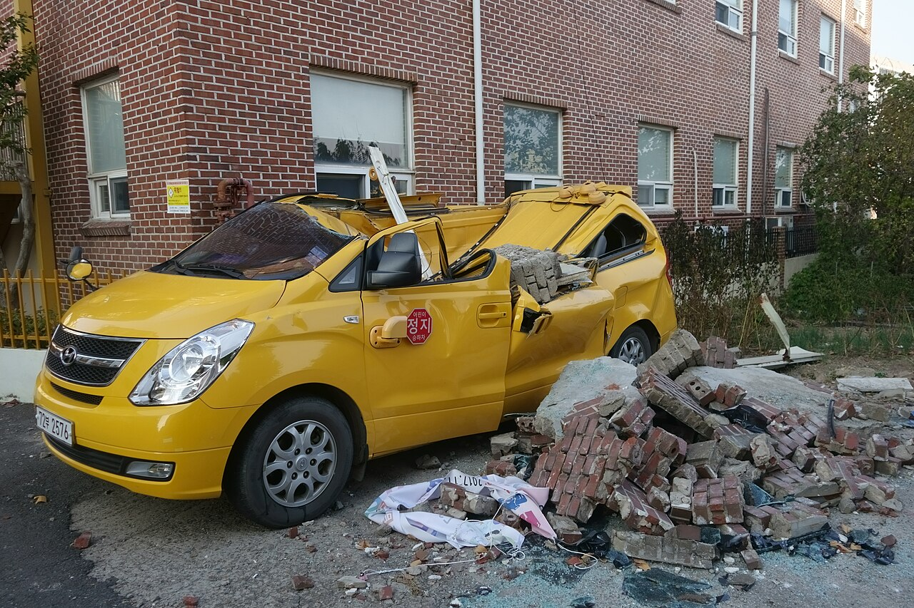

지구 속을 들여다보는 '초음파 검사'
교과서 p. 36학습 목표
- 지진파의 종류와 특성을 설명할 수 있다.
- 지진파를 이용해 지구 내부 구조를 알아내는 과정을 설명할 수 있다.
사람이 가 본 적 없는 지구 속은 어떻게 알아냈을까?
직접 파 보기?
인류가 가장 깊이 판 구멍은 약 12 km. 지구 반지름(약 6400 km)의 0.2%도 안 된다.
간접적인 방법
운석 연구, 중력·자기장 측정, 고온·고압 실험, 지각 열류량 측정, 그리고 지진파 탐사
가장 효과적인 방법
지구 내부를 통과해 온 지진파를 분석하는 것이다.
시추로 직접 확인하기에는 기술적 한계가 있다는 점에서 출발해, 간접적인 방법 중 지진파 탐사가 가장 효과적인 까닭을 묻습니다. 교과서 운영안은 5차시(지진의 발생·한반도 지진 탐구 / 지진파와 주시 곡선 / 지각 두께 탐구 / 지구 내부 구조 2차시)입니다.
2차시(100분) 수업 운영안
| 차시 | 단계 | 시간 | 활동 |
|---|---|---|---|
| 1차시 | 동기 유발 | 5분 | 포항·경주 지진 뉴스 영상, "땅속을 보지 않고 어떻게 내부를 알까?" |
| 핵심 개념 1 | 12분 | 지진의 원인, 진원·진앙, 진원 거리와 진앙 거리, 규모와 진도, 지진계 원리 | |
| 핵심 개념 2 | 25분 | P파·S파·표면파 비교 → PS시로 진원 거리 계산 → 주시 곡선 읽기 | |
| 정리 | 8분 | O/X ①·②, 계산 연습 2문항 | |
| 2차시 | 지각 두께 | 12분 | 직접파·굴절파, 교차 거리로 지각 두께 구하기(탐구 1과 연결) |
| 핵심 개념 3 | 20분 | 속도 분포 그래프 → 세 불연속면 → 암영대 → 층상 구조, 지진파 단면 영상 | |
| 탐구 활동 | 10분 | 한반도 지진 분포와 지진 발생 가능성(탐구 2) | |
| 형성 평가 | 8분 | 문항 풀이, 스스로 확인하기 |
지진의 발생
교과서 p. 36(1) 지진과 진원·진앙
- 지진: 지각에 오랫동안 쌓인 탄성 에너지가 한계를 넘어 급격히 방출되면서 땅이 흔들리는 현상. 주로 단층 활동으로 일어나지만 화산 활동, 마그마 이동, 지하 동굴 붕괴, 대규모 사태로도 생긴다.
- 진원: 지진이 처음 발생한 지구 내부의 지점 / 진앙: 진원에서 연직 방향으로 지표와 만나는 지점
- 진원 거리: 관측소~진원 / 진앙 거리: 관측소~진앙 / 진원 깊이: 진앙~진원
(2) 지진의 세기: 규모와 진도
| 규모 | 진도 | |
|---|---|---|
| 뜻 | 진원에서 방출된 에너지의 양 | 어느 지점에서 사람이 느끼는 정도나 피해 정도 |
| 장소에 따라 | 같은 지진이면 어디서나 같다 | 같은 지진이라도 장소마다 다르다 |
| 쓰임 | 여러 지역의 지진 세기 비교 | 지역별 피해 파악 |
- 한반도는 판의 경계에서 조금 떨어져 있지만, 최근 규모 5.0 이상의 지진이 일어나는 등 지진의 안전지대가 아니다.

자세히 알아보기 ① 지진은 왜, 어디서 일어날까? 심화 정리
- 지진: 지구 내부에 오랫동안 쌓인 탄성 에너지가 한순간에 파동으로 퍼져 나가며 땅이 흔들리는 현상
- 원인: 대부분 단층 운동. 그 밖에 화산 활동, 마그마의 이동, 대규모 산사태, 인간 활동(지하 개발, 지열 발전 등)도 지진을 일으킬 수 있다.
- 진원과 진앙: 지진이 처음 시작된 땅속 지점이 진원, 진원 바로 위 지표 지점이 진앙이다. 진원에서 진앙까지의 거리가 진원 깊이이다.
- 진원 거리와 진앙 거리: 진원~관측소 직선거리가 진원 거리, 진앙~관측소의 지표 거리가 진앙 거리이다. 진원이 땅속에 있으므로 진원 거리가 더 길고, 진원이 얕을수록 두 값의 차이가 작아진다.
| 구분 | 규모 | 진도 |
|---|---|---|
| 뜻 | 진원에서 나온 에너지의 양 | 어떤 장소에서 느끼는 흔들림·피해의 정도 |
| 관측 지점에 따라 | 같다 (지진 하나에 값 하나) | 다르다 (보통 진앙에서 멀수록 작다) |
| 표시 | 소수 한 자리 아라비아 숫자 (예: 규모 5.4) | 로마 숫자 등급 (우리나라는 Ⅰ~Ⅻ의 12단계) |
땅이 흔들리면 지진계의 받침과 기록 원통은 함께 움직이지만, 무거운 추는 관성 때문에 거의 제자리에 있으려 한다. 이 상대적인 움직임이 기록지에 그려진다. 빠른 파동부터 도착하므로 기록은 P파 → S파 → 표면파 순으로 나타난다.
개념 확인 ① O/X
지진파의 종류와 주시 곡선
교과서 p. 38 ~ 39(1) 실체파와 표면파
- 지진파: 진원에서 방출된 에너지가 파동의 형태로 퍼져 나가는 것. 실체파와 표면파로 나눈다.
- 실체파: 진원에서 모든 방향으로 지구 내부를 통과해 퍼진다. 통과하는 물질에 따라 속도가 변해 지구 내부 구조를 알아내는 데 쓰인다.
- P파: 진행 방향과 진동 방향이 나란한 종파. 고체·액체·기체를 모두 통과하며 S파보다 빠르다.
- S파: 진행 방향과 진동 방향이 수직인 횡파. 고체만 통과하며 P파보다 느리다.
- 표면파: 진앙에서 지표면을 따라 퍼진다. 느리지만 진폭이 커서 큰 피해를 준다.
| 종류 | 속도 (km/s) | 진폭 | 피해 |
|---|---|---|---|
| P파 | 5 ~ 8 | 작다 | 작다 |
| S파 | 3 ~ 4 | 중간 | 중간 |
| 표면파 | 2 ~ 3 | 크다 | 크다 |
(2) 지진 기록과 PS시, 주시 곡선
- 지진이 일어나면 가장 빠른 P파 → S파 → 표면파 순으로 관측소에 도착한다.
- PS시: P파가 도착한 뒤 S파가 도착할 때까지의 시간. 진원에서 멀수록 커진다.
- P파와 S파의 속도를 알고 PS시를 재면 진원 거리를 구할 수 있다.
- 주시 곡선: 진앙 거리와 지진파 도달 시간의 관계를 나타낸 그래프. P파·S파 곡선 사이 간격이 PS시와 같은 지점을 찾으면 진앙 거리를 알 수 있다.
(3) 직접파와 굴절파로 지각의 두께 구하기
- 지진파는 매질에 따라 속도가 바뀌고, 다른 매질의 경계에서 반사·굴절한다. 일반적으로 밀도가 클수록 빨라서 지각보다 맨틀에서 더 빠르다.
- 직접파: 지각만 통과해 온 P파 / 굴절파: 맨틀까지 통과해 온 P파
- 가까운 곳에는 직접파가, 먼 곳에는 굴절파가 먼저 도착한다. 두 파가 동시에 도착하는 지점까지의 거리를 교차 거리라고 한다.
- 주시 곡선에서 각 직선의 기울기의 역수가 그 P파의 속도이다.
자세히 알아보기 ② 지진파 세 가족 한눈에 비교 심화 정리
| 구분 | P파 | S파 | 표면파 (러브파·레일리파) |
|---|---|---|---|
| 파동 종류 | 종파 (진동 방향 ∥ 진행 방향) | 횡파 (진동 방향 ⊥ 진행 방향) | 지표면을 따라 전파 |
| 대륙 지각 속도 | 약 6~8 km/s | 약 3~4 km/s | 약 2~3 km/s |
| 통과 매질 | 고체·액체·기체 | 고체만 | 지표 부근 |
| 진폭 / 피해 | 작다 / 작다 | 중간 / 크다 | 크다 / 매우 크다 |
| 매질의 변화 | 압축·팽창 (부피 변화) | 모양 변화 | 러브파: 수평으로 좌우 흔들림 레일리파: 물결처럼 타원 운동 |
- 실체파(P파·S파)는 지구 내부를 통과하므로 지구 내부 구조를 알아내는 데 쓰이고, 표면파는 실체파가 지표에 닿은 뒤 지표를 따라 생겨 퍼진다.
- P파와 S파는 진원에서 동시에 출발하지만, P파가 빨라 먼저 도착한다.
자세히 알아보기 ③ PS시와 주시 곡선으로 거리 구하기 심화 정리
- PS시: P파 도착 시각과 S파 도착 시각의 차이. 진원에서 멀수록 커진다.
- 진원 거리 공식: 진원 거리를 d라 하면 P파는 d/VP, S파는 d/VS 만큼 걸린다.
PS시 = d/VS − d/VP 이므로 d = PS시 × VPVS / (VP − VS)
VP = 8 km/s, VS = 4 km/s, PS시 = 10초라면
d = 10 × (8 × 4) / (8 − 4) = 10 × 32 / 4 = 80 km
• 이 조건에서는 d = 8 × PS시 가 되어, PS시만 알면 바로 거리를 어림할 수 있다.
• 관측소 3곳 이상에서 진원 거리를 구해 각각 원을 그리면, 세 원이 만나는 곳(공통 현의 교점)에서 진앙을 찾을 수 있다.
- 주시 곡선: 진앙 거리(가로축)에 따른 지진파 도달 시간(세로축) 그래프. P파와 S파 곡선 사이의 간격이 측정한 PS시와 같은 곳을 찾아 가로축을 읽으면 진앙 거리가 나온다.
- 진앙 거리 약 1000 km 안쪽에서는 거의 직선이지만, 멀어질수록 지진파가 더 깊고 빠른 층을 지나므로 곡선이 위로 볼록하게 휜다.
자세히 알아보기 ④ 직접파와 굴절파로 지각 두께 구하기 심화 정리
- 직접파: 지각만 지나 곧장 온 P파 (속도 V1)
- 굴절파: 지각을 내려가 모호면에서 굴절한 뒤, 더 빠른 맨틀 윗부분(속도 V2)을 따라 달리다 다시 올라온 P파
- 교차 거리(L): 직접파와 굴절파가 동시에 도착하는 진앙 거리. 이보다 가까우면 직접파가, 멀면 굴절파가 먼저 온다(돌아가도 빠른 길로 가기 때문).
- 주시 곡선의 기울기: 직선의 기울기 = 시간/거리 이므로, 기울기의 역수가 속도이다. 굴절파 직선의 기울기가 더 완만하다(속도가 더 크다).
- 지각의 두께: d = (L/2) × √[(V2 − V1) / (V2 + V1)]
V1 = 6 km/s, V2 = 8 km/s, 교차 거리 L = 120 km라면
d = (120/2) × √(2/14) = 60 × √(1/7) ≈ 60 × 0.38 ≈ 약 23 km
• 교차 거리가 멀수록 지각이 두껍다. 같은 방법으로 대륙과 해양의 지각 두께 차이를 확인할 수 있다.
개념 확인 ② O/X
지진파로 밝힌 지구 내부 구조
교과서 p. 42 ~ 44(1) 해 보기 · 지진파의 속도 분포로 지구 내부 구조 추정하기
- 지구 내부가 균질하다면 지진파는 같은 속도로 퍼질 것이다. 그러나 실제로는 깊이에 따라 속도가 변한다. → 깊이에 따라 구성 물질의 종류와 상태가 다르다.
- 속도가 급변하는 불연속면을 경계로 지구 내부는 지각·맨틀·외핵·내핵의 층상 구조를 이룬다.
- 깊이에 따라 P파와 S파의 속도는 어떻게 변하는가?
- 속도 변화를 바탕으로 지구 내부를 몇 개의 층으로 나눌 수 있는가?
- 깊이 약 200 km 부근에서 P파가 느려지는 까닭은?
2. 속도가 급변하는 경계를 기준으로 4개의 층(지각, 맨틀, 외핵, 내핵)으로 나눌 수 있다.
3. 이 부분이 위아래 층보다 무르고 약해 유동성을 띠기 때문이다(연약권).
(2) 불연속면의 발견
- 모호로비치치 불연속면 (모호면): 모호로비치치는 진앙에서 먼 관측소에 직접파보다 먼저 도착하는 굴절파가 있다는 것을 발견하고, 약 40 km 깊이에서 속도가 급격히 빨라지는 경계면을 알아냈다. → 지각과 맨틀의 경계
- 구텐베르크 불연속면 (약 2900 km): 구텐베르크는 지진파가 도달하지 않는 암영대를 연구했다.
- S파 암영대 (각거리 103°~180°): S파가 액체를 통과하지 못하기 때문 → 외핵은 액체
- P파 암영대 (각거리 103°~142°): 맨틀과 외핵의 경계에서 P파 속도가 급감하며 크게 굴절하기 때문
- → 맨틀과 핵의 경계
- 레만 불연속면 (약 5100 km): 레만은 각거리 약 110°에 약한 P파가 도달하는 것을 보고, 핵 속에서 P파가 급격히 빨라지는 경계면이 있음을 알아냈다. → 외핵(액체)과 내핵(고체)의 경계
S파 암영대가 103°~180° 전체인 까닭 → S파가 외핵(액체)을 통과하지 못함
P파 암영대가 103°~142°인 까닭 → 외핵에서 크게 굴절하여 142° 너머로 나옴
(3) 지구 내부 구조와 지진파 단면 영상
| 층 | 깊이 (km) | 상태 | 경계면 |
|---|---|---|---|
| 지각 | 0 ~ 약 35 (대륙 30~70, 해양 5~8) | 고체 | 모호면 |
| 맨틀 | ~ 약 2900 (상부·하부 경계 약 670) | 고체 | 구텐베르크 불연속면 |
| 외핵 | ~ 약 5100 | 액체 | 레만 불연속면 |
| 내핵 | ~ 6371 | 고체 | — |
- 지각과 맨틀은 상태에 따라 나누기도 한다.
- 암석권: 연약권 위의 단단한 암석 부분 (대륙 100~150 km, 해양 70~100 km)
- 연약권: 상부 맨틀에서 일부가 녹아 있어 지진파 속도가 급감하는 층
- 중간권: 하부 맨틀. 단단하고 깊을수록 압력이 커져 밀도가 커진다.
- 지진파 단면 영상: 수많은 지진의 P파·S파가 전 세계 수천 개 관측소에 도달하는 시간을 분석해 지구 내부를 3차원 영상으로 만드는 기술. 섭입대 구조, 화산 아래 마그마방의 크기, 플룸의 분포를 추정하는 데 쓰인다.
자세히 알아보기 ⑤ 세 불연속면과 암영대 심화 정리
| 불연속면 | 깊이 | 발견 (연도) | 근거 |
|---|---|---|---|
| 모호로비치치 불연속면 (모호면) | 대륙 약 30~70 km, 해양 약 5~8 km 아래 | 모호로비치치 (1909) | 발칸반도 지진 기록에서 이 깊이 아래로 지진파 속도가 급증 |
| 구텐베르크 불연속면 | 약 2900 km | 구텐베르크 (1914) | P파 속도 급감, S파는 통과하지 못함 → 외핵은 액체 |
| 레만 불연속면 | 약 5100 km | 레만 (1936) | P파 암영대(각거리 약 110°)에 약한 P파 도착, 핵 안에서 P파 속도 증가 → 내핵은 고체 |
| 암영대 | 범위 (진앙으로부터 각거리) | 생기는 까닭 |
|---|---|---|
| P파 암영대 | 약 103° ~ 142° | P파가 맨틀-외핵 경계에서 크게 굴절되어 이 구간을 비켜 간다 |
| S파 암영대 | 약 103° ~ 180° | S파가 액체인 외핵을 통과하지 못한다 |
• 0~40 km 부근: P파·S파 모두 급증 → 모호면
• 약 100~400 km: S파 속도가 잠깐 줄어드는 저속도층 → 일부가 녹은 연약권
• 약 2900 km: P파 급감, S파 사라짐 → 액체 외핵 시작
• 약 5100 km: P파 다시 증가 → 고체 내핵
자세히 알아보기 ⑥ 지구 내부의 두 가지 층 나누기 심화 정리
| 층 (구성 물질 기준) | 범위 | 주요 물질 | 특징 |
|---|---|---|---|
| 지각 | 지표 ~ 모호면 | 규산염 광물 | 대륙 지각(화강암질, 30~70 km, 약 2.7 g/cm³)과 해양 지각(현무암질, 5~8 km, 약 3.0 g/cm³) |
| 맨틀 | 모호면 ~ 약 2900 km | 감람암질 암석 | 지구 부피의 약 80% 이상 |
| 외핵 | 약 2900 ~ 5100 km | 철, 니켈 | 액체, 지구 자기장을 만든다 |
| 내핵 | 약 5100 km ~ 중심(약 6400 km) | 철, 니켈 | 고체 (매우 큰 압력) |
| 층 (물질의 상태 기준) | 범위 | 특징 |
|---|---|---|
| 암석권 | 지표 ~ 약 100 km | 지각 + 맨틀 최상부의 단단한 층 = 판 |
| 연약권 | 약 100 ~ 400 km | 일부가 녹아 유동성이 있음, 저속도층, 맨틀 대류 |
| 중간권 | 약 400 ~ 2900 km | 단단한 암석층, 깊을수록 압력과 밀도 증가 (지구 부피의 약 56%) |
- 지진파 단면 영상: 여러 지진의 P파·S파 도달 시간을 분석해 내부 온도 분포를 그림으로 나타낸다. 빨간색(느림)은 뜨거운 곳 → 뜨거운 플룸, 파란색(빠름)은 차가운 곳 → 차가운 플룸. 일본 해구에서 섭입한 태평양판이 맨틀-외핵 경계 가까이까지 내려간 모습이 보인다.
개념 확인 ③ O/X
지진파 자료로 지각의 두께 구하기 · 한반도 지진
교과서 p. 37, 40 ~ 41탐구 1 · 지진파 자료를 활용하여 지각의 두께 구하기
목표 지진파 자료를 활용해 우리나라 지각의 두께를 구할 수 있다. 준비물 스마트 기기(스프레드시트)
| 관측소 | A | B | C | D | E | F | G | H |
|---|---|---|---|---|---|---|---|---|
| 진앙 거리 (km) | 111 | 126 | 189 | 267 | 309 | 345 | 389 | 454 |
| P파 이동 시간 (초) | 19.3 | 20.9 | 33.9 | 42.2 | 48.5 | 52.4 | 59.6 | 66.6 |
교과서 탐구 자료 (우리나라에서 발생한 어느 지진, 진원 깊이 10 km)
- 진앙 거리(가로축)와 P파 이동 시간(세로축)으로 점그래프를 그린다.
- 추세가 꺾이는 지점을 찾아 교차 거리를 찾는다.
- 꺾이는 지점을 기준으로 구간을 나누어 추세선을 각각 그린다. (첫 구간은 원점을 지나게 한다.)
- 추세선의 기울기로 직접파와 굴절파의 속도를 구한다.
- 식을 이용해 지각의 두께를 구한다.
탐구 1 결과 및 정리
1. 그래프에서 찾은 교차 거리, 직접파와 굴절파의 속도는?
2. 구한 우리나라 지각의 두께는?
3. 지역마다 지각의 두께가 다르게 나타나는 까닭을 추론해 보자.
평가 기준 예시(산출물): 스프레드시트로 작성한 주시 곡선이 정확하고, 이를 바탕으로 지각의 두께를 옳게 구했는가(상/중/하). 지각 두께 공식의 유도 과정은 다루지 않습니다.
탐구 2 · 한반도 지진의 분포 특성과 지진 발생 가능성 예측하기
목표 한반도에서 발생한 지진의 분포 특성을 알고 지진 발생 가능성을 예측할 수 있다.
- 기상청 날씨누리(www.weather.go.kr) → 지진·화산 → 지진 조회 → 국내에서 최근 20년 자료를 규모 범위별로 내려받는다. (2.0~3.0 / 3.0~4.0 / 4.0~5.0 / 5.0~6.0)
- 지도 애플리케이션에 규모 범위별로 모양이나 색을 다르게 하여 표시한다.
결과 및 정리
1. 최근 한반도 지진의 분포 특성은? 2. 앞으로의 지진 발생 가능성은? 3. 1998년까지 연간 지진 발생 횟수가 현저히 적었던 까닭은?
2. 규모 2.0 이상의 지진이 전역에서 계속 일어나고, 규모 4.0 이상도 여러 지역에서 일어날 가능성이 크다. 과거에 지진이 잦았던 지역일수록 가능성이 높다.
3. 디지털 관측이 시작되면서 작은 지진까지 정밀하게 감지할 수 있게 되었기 때문이다. 사람이 느끼는 지진의 추세는 큰 차이가 없다.
스스로 확인하기
1. 지진파의 종류와 특성을 설명해 보자.
2. 지진파로 지구 내부의 구조와 물질의 상태를 알 수 있는 까닭은?
3. 창의력 더하기 · 규모 외에 지진의 피해에 영향을 주는 요인은?
개념 확인 문제
그림 출처
사진은 Wikimedia Commons의 CC 라이선스 자료이며 그림 아래에 저작자와 라이선스를 표시했습니다. 모식도와 시뮬레이션은 직접 만들었습니다. 탐구 1의 관측 자료는 교과서 탐구 자료를 사용했습니다. 지진파 속도 분포는 표준 지구 모형을 단순화한 근삿값입니다.